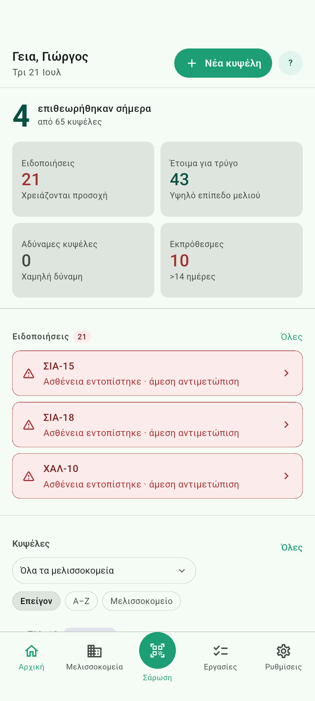

1
Ο πίνακας ελέγχου σας
Δείτε κάθε κυψέλη με μια ματιά. Οι κάρτες στην κορυφή δείχνουν ποιες κυψέλες χρειάζονται προσοχή, είναι έτοιμες για συγκομιδή, είναι αδύναμες ή εκπρόθεσμες — πατήστε μια κάρτα για να δείτε μόνο αυτές.